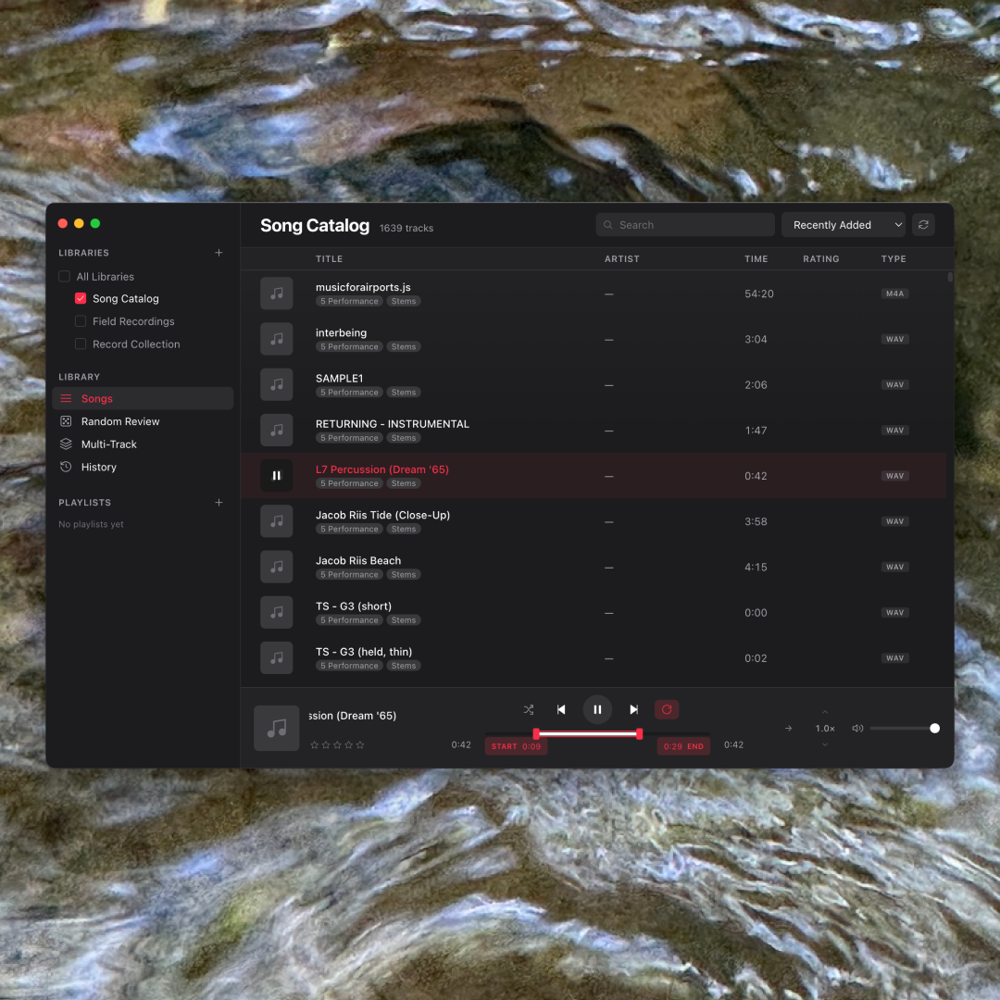

Case study · 2025 – present
Archive
A local-first macOS app for re-discovering large music libraries — turning a collection you play into one you can actually explore.
In short
- The problem
- Every music player is built to play what you already know. None help a musician re-encounter decades of their own forgotten material.
- My role
- Sole product designer and developer — a novice coder pair-working with AI, owning the UX, the audio engine, and the ship.
- The core constraint
- Design toward one felt principle — “stay embodied while moving fast” — and keep the code simple enough to be maintained by a small offline AI model. That ruled out cleverness.
- The outcome
- A shipped, tagged v0.1.0 with an installable
.dmgand written architecture docs — a real desktop app I use daily, with two hard-won engineering pivots and a couple of edges still honestly rough.

Overview
A tool for re-discovering your own music
Archive is a personal, local-first audio tool for macOS. It scans a large music library and helps you re-encounter what's in it — pull a random slice to jog your memory, loop a region and slow it down to learn it, or layer up to five tracks and hear what collides. The first user is me: a composer sitting on decades of audio scattered across an external drive, most of it forgotten. The deeper “who” is any musician — and eventually wellness practitioners — with more material than they can hold in their head. It's inspired by the archive-review tool Peter Chilvers built for Brian Eno.
The problem
Every player plays. None help you rediscover.
A music player treats a library as a queue to play, never an archive to re-encounter. There's no “surprise me with a forgotten track,” no “loop these eight bars and slow them down to learn them,” no “layer three pieces and hear what collides.” If you've made or collected music for years, you have more than you can remember — and every tool is pointed at what you already know.
What made this genuinely hard is that the design goal was never a feature list — it was a feeling. The app should reduce screen-friction so your body stays in the music. That reframes every interaction question into one test: does this pull the user out of the music, or keep them in it?
The reframe
A library isn't a list to play — it's an archive to explore
That single shift drove every feature. And one line did more real design work than
any requirements doc, because it could actually resolve a decision at 2am. When
naming a Scene, the obvious move is a modal dialog — but a modal yanks you out of
flow (and Electron silently disables window.prompt() anyway), so the
control became an inline text input right where you clicked: Enter to commit, Esc to
cancel. The same logic drove keyboard-first transport, one-keystroke tagging
(T), and per-track “loop chips” — intro / verse / chorus / solo saved
onto a track like metadata and recalled in a click. Every one was a “fewer clicks,
stay in the music” call.
“Stay embodied while moving fast.”
— the design principle that settled every argument
The core interactions
Ways back into the material
Random Review is the heart of it — pull a random track, or a random 1–60 second slice from a random track, to break the habit of reaching for what you already know. A-B loop loops any region at variable speed, forwards or reversed — for study, or for turning a fragment into a texture. Multi-Track layers up to five tracks at once, each with its own loop, speed, and direction, saved as a Scene you can recall — where discovery quietly becomes composition. Plus in-tune semitone re-pitching (snapped to real piano pitches, not by ear) and Smart Playlists that re-evaluate live.
Technical architecture
Built to be maintained by a small, offline AI
A real, shipping desktop app. TypeScript, Electron, Vite, and the Web Audio API, with recursive library scanning, ID3 and embedded-artwork parsing, macOS Finder colour-tag pickup, a tagging system, and Smart Playlists — saved queries that re-evaluate live (“tracks rated 4+ tagged seed, in WAV or AIFF”).
The constraint that shaped the whole codebase. The long-term plan is to maintain Archive with a small local AI model — a 7–14B coder running offline. That one decision became real engineering rules: files under ~300 lines, boring and conventional patterns only, no exotic dependencies, no WASM, and heavy plain-English comments. Elegance-by-cleverness was disallowed. Designing for a future maintainer with a small context window is a discipline most codebases never impose on themselves — and it made this one far calmer to reason about.
Local-first, on purpose. No accounts, no uploads — your music never leaves your Mac. For an archive of personal, often unreleased work, ownership and privacy aren't features; they're the premise. Libraries live on external drives, and the app ships unsigned (zero budget, no Apple Developer account) — which turned macOS's permission system, Gatekeeper and Full Disk Access, into a real design problem rather than a footnote.
The messy middle
Two pivots I had to make in the open
Pivot 1 — real-time, not pre-rendered. My first version of “slow a loop down without dropping its pitch” pre-rendered the audio: it baked the stretched region into a new buffer before playing. It worked, but it forced a loading delay and required you to set a loop first. Then I asked the blunt question that broke it open: YouTube does 1.5× on a podcast instantly — why does mine need a pause, and why is it gated behind loop mode at all? I'd optimized for the niche (transcription) and missed the universal mental model. The right foundation was real-time processing, available anytime — so I tore the pre-render out and rebuilt it.
Pivot 2 — fix the model, not the pixels. The hardest bug: while looping, dragging the loop's start past the playhead made the playhead visually run backwards. The instinct is to patch the visual. But after studying how Ableton, Logic, and Serato actually behave, the real fix was to treat the audio as the source of truth and make the drawn playhead mirror what the audio is really doing — including a brief “settling” period before it enters the loop. The bug wasn't a nudge to a number; it was three different clocks — audio-sample time, wall-clock time, and drawn time — that I finally had to model correctly.
A smaller but telling detail: users don't think “transcription mode,” they think “make it slower but keep the pitch” — the podcast gesture. So the control borrowed the musician-native word the CDJs and Serato already use: a keylock padlock, not a bespoke label I'd invented.
Outcome
Shipped v0.1 — told straight
v0.1.0 shipped as a real, tagged GitHub release with an installable .dmg,
a proper README, and — unusually — a written STUDY_GUIDE.md and a running
LEARNED.md concept log, because a second goal was understanding the
codebase well enough to defend it in an interview. Today it does the whole loop: add
folders as libraries; browse, search, rate, and tag; Random Review; A-B looping with
variable speed and reverse; Multi-Track layering with saveable Scenes; smart
playlists; per-track saved loops; in-tune re-pitching; and a first Transcribe /
keylock mode.
The honest reception: it's early, and the user base is essentially n = 1 — me — with the clear intent to widen to musicians and practitioners. I'm not going to invent adoption numbers. The truthful outcome is threefold: a working tool I actually use to re-encounter my own archive and practice transcription; a shipped, documented artifact that took a sprawling experiment to a disciplined v0.1; and a couple of things still visibly rough — the unsigned-build permission dance, and a click-to-seek interaction on the timeline still being debugged as of this writing. Leaving that in is the honest version.
Reflection
What I'd carry forward
Test in the real, packaged environment far earlier. The two nastiest problems — audio that played fine in development but was silently blocked in the installed app, and the timeline-seek bug — both lived in the gap between “it type-checks and works in my head” and “it works on the user's actual machine.” That's a design lesson, not just an engineering one: an abstraction clean on paper can still be broken in the hand, and the only way to know is to put it in the hand.
Build the right foundation, not the convenient one when the
difference is architectural — the pre-render shortcut had to be torn out. A
single quotable principle beats a spec — “stay embodied while moving fast”
resolved real decisions a requirements doc never could. And scope discipline
via a ROADMAP genuinely worked: every tempting idea went into
ROADMAP.md instead of the code, which is the only reason a v0.1 exists at
all. Small and excellent beats big and unfinished.
The quiet meta-lesson: on this project the hard questions were rarely “can we build it?” They were “does it actually feel right?” — and embodiment is almost impossible to verify by reading code. You have to use it.